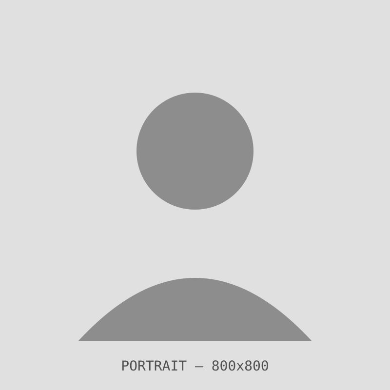

UX Designer specializing in Visual/UI Design, Design Systems & WCAG 2.2 Accessibility.
I'm at my best solving three kinds of problems:
What I do
-
Design systems that scale
I think in tokens, not screens — architecting the layer between design intent and production code so a system stays consistent as it grows across teams and products, not just at launch.
-
Accessibility as infrastructure, not a checklist
I've taken a live enterprise product from 35 WCAG 2.2 violations to zero during an active migration, then built the prevention mechanism into the design system itself so the violations don't come back.
-
Design-to-code, including AI-directed
My engineering background (B.E., Mechanical) means I read and reason about code, not just hand it off. I've directed LLM-assisted frontend generation from a well-structured design system to an 80% component match rate in 7 days — and I can tell you honestly what the other 20% needed and why.
Before UX, I ran design for a national college fest (Incridea 2022) and freelanced across branding and visual identity for clients from local businesses to a shipping MNC — which is where the systems thinking and the visual craft both started. I'm currently relocating to the UAE, based between Dubai, Abu Dhabi, and Sharjah, and available immediately.
Have a design systems or accessibility problem worth solving? Get in touch
What each case study is built with.
Design systems & UI engineering
- 1FigmaVariables · Auto Layout · Dev Mode · Code Connect
- 2FigJam & Figma Make
- 3Design tokens3-tier · OKLCH · Style Dictionary
- 4Component architectureCVA variants
Accessibility
- 5WCAG 2.2 compliance & remediation
- 6Accessibility audits
- 7Focus state & ARIA standardization
- 8Inclusive design
AI-assisted & front-end workflows
- 9LLM-directed code generation
- 10GitHub Copilot
- 11Prompt engineering
- 12Bootstrap 5 & HTML/CSS architecture
Creative suite & process
- 13Adobe Photoshop & Illustrator
- 14Adobe Premiere Pro
- 15Agile/Scrum & cross-functional collaboration
- 16Design critique facilitation
Placeholder — this list will be re-issued once the expanded skills inventory (research methods, additional tools, PM/collaboration software) is finalized.
Continuous learning.
- Accessibility: How to Design for All Completed
- AI for Designers Completed
- Enterprise Design Thinking Practitioner Completed
- AI Ethics Completed
- Introduction to Web Accessibility Ongoing
- One Million Prompters Completed
Placeholder — add "show credential" links once Credential IDs/URLs are ready to publish here (already on LinkedIn).